Person
Author: Takin.solutions Ltd.
Version: 1.0
Person
An individual human person. This is used for notaries, merchants, and other people referred to in the archival sources.
| Name | URI | |
|---|---|---|
| Root Ontology Node | E21 Person | https://cidoc-crm.org/Entity/E21-Person/version-7.1.1 |
| Type Differentiator | N/A | N/A |
| Filed ID | Name | Description | Data Type | CRM Path |
|---|---|---|---|---|
| LAF.6 | Name | This field is used to record the string value of the name attributed to the documented person. | String | ->p1->E33_E41[4_1]->p190->rdf:literal |
| LAF.5 | Name Type | This field is used to record the type of the name attributed to the documented person. | Concept | ->p1->E33_41[4_1]->p2->E55[5_1] |
| LAF.7 | Name Language | This field is used to record the language of the name attributed to the documented person. | Concept | ->p1->E33_E41[4_1]->p72->E56[7_1] |
| LAF.44 | Source Reference Work for Name | This field is used to link to a source text in which the name denoting the documented person is used. | Reference Model [DHIM.5_Legal Document] | ->p1->E33_E41[4_1]->p67i->E33[44_1] |
| DHIF.1 | place name refers to | This field is used to link the documented name to a place to which it refers. | Reference Model [DHIM.3_Place] | ->p1->E33_E41[4_1]->p106->E33_41[33_1]->p67->E53[DHIF.1_1] |
| LAF.15 | Statement | This field is used to record the actual textual content of the statement describing the documented person. | String | ->p67i->E33[13_1]->p190->rdf:literal |
| LAF.14 | Statement Type | This field is used to record the formal type of the statement made about the documented person. | Concept | ->p67i->E33[13_1]->p2->E55[14_1] |
| LAF.16 | Statement Language | This field is used to record the language of the statement describing the documented person. | Concept | ->p67i->E33[13_1]->p72->E56[16_1] |
| LAF.55 | Source Reference Work for Statement | This field is used to link to a source text from which the statement describing the documented person is derived. | Reference Model [DHIM.5_Legal Document] | ->p67i->E33[13_1]->p67i->E33[55_1] |
| LAF.229 | Nationality | This field is used to record the nationality of the documented person. | Concept | ->p2->E55[229_1]->p2->E55[229_1]->p2->E55[229_2] |
| LAF.230 | Gender | This field is used to record the gender of the documented person. | Concept | ->p2->E55[230_1]->p2->E55[230_1]->p2->E55[230_2] |
| LAF.9 | Identifier Type | This field is used to record the type of the identifier attributed to the documented person. | Concept | ->p1->E42[8_1]->p2->E55[9_1] |
| LAF.10 | Identifier | This field is used to record an identifier attributed to the documented person. | String | ->p1->E42[8_1]->p190->rdf:literal |
| LAF.196 | TimeSpan of Birth Event | This field is used to link the documented event of birth to an instance of time-span recording the temporal extent of the event. | Collection [LAP.6_TimeSpan] | ->P98i->E67[192_1]->P4->E52[196_1] |
| LAF.187 | TimeSpan of Death Event | This field is used to link the documented event of death to an instance of time-span recording the temporal extent of the event. | Collection [LAP.6_TimeSpan] | ->P100i->E69[183_1]->P4->E52[187_1] |
| PIRF_1.569 | Profession | This field is used to indicate a profession that is attributed to a person without having to specify periods of activity etc. It is used for classifying an individual. | Concept | ->p2->E55[569_1] |
| DHIF.3 | social class | This field is used to record information related to the documented person's social class without having to specify periods of activity etc. It is used for classifying an individual. | Concept | ->p2->E55[DHIF.3_1] |
| DHIF.2 | has parent | This is field is used to link the documented person to their parent. | Reference Model [DHIM.1_Person] | ->p152->E21[DHIF.2_1] |
| LAF.172 | Actor Residence or Associated Location | This field is used to link the documented person to a place at which they have been resident. | Reference Model [DHIM.3_Place] | ->P74->E53[172_1] |
| LAF.167 | Member of Group | This field is used to link the documented person to a group to which it belongs as a member. | Reference Model [DHIM.2_Group] | ->P107i->E74[167_1] |
| LAF.39 | Source Reference Work | This field is used to link the documented person to an instance of textual work which references it. | Reference Model [DHIM.5_Legal Document] | ->p67i->E33[39_1] |
| PIRF.426 | Digital Source | This field is used to link the documented entity to a digital object, expressed as a uri, which describes it. | uri | ->P67i->D1[426_1] |
| PIRF.427 | Digital Source Reference | This field is used to indicate the type of a a digital object, expressed as a uri, which describes the documented entity. | Concept | ->P67i->D1[426_1]->P2->E55[427_1] |
- Person Ontology Graph
[to view the image right click 'open image in a new tab'] 
- Person RDF
@prefix crm: <http://www.cidoc-crm.org/cidoc-crm/> .
@prefix rdfs: <http://www.w3.org/2000/01/rdf-schema#> .
@prefix skos: <http://www.w3.org/2004/02/skos/core#> .
<https://linked.art/example/models/person> a crm:E21_Person ;
crm:P100i_died_in <https://linked.art/example/event/183_1> ;
crm:P107i_is_current_or_former_member_of <https://linked.art/example/actor/167_1> ;
crm:P152_has_parentt <https://linked.art/example/actor/DHIF.2_1> ;
crm:P1_is_identified_by <https://linked.art/example/conceptual_object/4_1>,
<https://linked.art/example/conceptual_object/8_1> ;
crm:P2_has_type <https://linked.art/example/type/229_1>,
<https://linked.art/example/type/230_1>,
<https://linked.art/example/type/569_1>,
<https://linked.art/example/type/DHIF.3_1> ;
crm:P67i_is_referred_to_by <https://linked.art/example/conceptual_object/13_1>,
<https://linked.art/example/conceptual_object/39_1> ;
crm:P74_has_current_or_former_residence <https://linked.art/example/place/172_1> ;
crm:P98i_was_born <https://linked.art/example/event/192_1> ;
skos:ExactMatch <https://linked.art/example/entity/37_1> .
<http://vocab.getty.edu/aat/300418049> a crm:E55_Type .
<http://vocab.getty.edu/page/aat/300379842> a crm:E55_Type ;
rdfs:label "Nationality" .
<http://vocab.getty.edu/page/aat/300404670> a crm:E55_Type ;
rdfs:label "preferred terms" .
<http://vocab.getty.edu/page/aat/300411835> a crm:E55_Type ;
rdfs:label "Gender" .
<https://linked.art/example/actor/167_1> a crm:E74_Group .
<https://linked.art/example/actor/DHIF.2_1> a crm:E39_Actor .
<https://linked.art/example/conceptual_object/13_1> a crm:E33_Linguistic_Object ;
crm:P190_has_symbolic_content "Statement_string_content" ;
crm:P2_has_type <https://linked.art/example/type/14_1> ;
crm:P67i_is_referred_to_by <https://linked.art/example/statement/55_1> ;
crm:P72_has_language <https://linked.art/example/type/16_1> .
<https://linked.art/example/conceptual_object/39_1> a crm:E33_Linguistic_Object .
<https://linked.art/example/conceptual_object/4_1> a crm:E33_E41_Linguistic_Appellation ;
crm:P106_is_composed_of <https://linked.art/example/name/500_1> ;
crm:P190_has_symbolic_content "Name_string_value" ;
crm:P2_has_type <http://vocab.getty.edu/page/aat/300404670> ;
crm:P67i_is_referred_to_by <https://linked.art/example/textual_object/44_1> ;
crm:P72_has_language <https://linked.art/example/type/7_1> .
<https://linked.art/example/conceptual_object/8_1> a crm:E42_Identifier ;
crm:P190_has_symbolic_content "Identifier_value_content" ;
crm:P2_has_type <https://linked.art/example/identifier/9_1> .
<https://linked.art/example/entity/37_1> a crm:E1_CRM_Entity .
<https://linked.art/example/event/183_1> a crm:E69_Death ;
crm:P4_has_time-span <https://linked.art/example/time_span/187_1> .
<https://linked.art/example/event/192_1> a crm:E67_Birth ;
crm:P4_has_time-span <https://linked.art/example/time_span/196_1> .
<https://linked.art/example/identifier/9_1> a crm:E55_Type .
<https://linked.art/example/name/500_1> a crm:E33_E41_Linguistic_Appellation ;
crm:P67_refers_to <https://linked.art/example/place/DHIF.1_1> .
<https://linked.art/example/place/172_1> a crm:E53_Place .
<https://linked.art/example/place/DHIF.1_1> a crm:E53_Place .
<https://linked.art/example/statement/55_1> a crm:E33_Linguistic_Object .
<https://linked.art/example/textual_object/44_1> a crm:E33_Linguistic_Object .
<https://linked.art/example/time_span/187_1> a crm:E52_Time-Span .
<https://linked.art/example/time_span/196_1> a crm:E52_Time-Span .
<https://linked.art/example/type/14_1> a crm:E55_Type ;
crm:P2_has_type <http://vocab.getty.edu/aat/300418049> .
<https://linked.art/example/type/16_1> a crm:E56_Language .
<https://linked.art/example/type/229_1> a crm:E55_Type ;
crm:P2_has_type <http://vocab.getty.edu/page/aat/300379842> .
<https://linked.art/example/type/230_1> a crm:E55_Type ;
crm:P2_has_type <http://vocab.getty.edu/page/aat/300411835> .
<https://linked.art/example/type/569_1> a crm:E55_Type ;
rdfs:label "Profession" .
<https://linked.art/example/type/7_1> a crm:E56_Language .
<https://linked.art/example/type/DHIF.3_1> a crm:E55_Type .
- Person JSON-LD
{
"@context": "https://linked.art/ns/v1/linked-art.json",
"@graph": [
{
"classified_as": [
"http://vocab.getty.edu/page/aat/300411835"
],
"id": "https://linked.art/example/type/230_1",
"type": "Type"
},
{
"id": "https://linked.art/example/type/16_1",
"type": "Language"
},
{
"id": "https://linked.art/example/conceptual_object/39_1",
"type": "LinguisticObject"
},
{
"id": "https://linked.art/example/actor/167_1",
"type": "Group"
},
{
"born": "https://linked.art/example/event/192_1",
"classified_as": [
"https://linked.art/example/type/229_1",
"https://linked.art/example/type/DHIF.3_1",
"https://linked.art/example/type/230_1",
"https://linked.art/example/type/569_1"
],
"crm:P107i_is_current_or_former_member_of": {
"id": "https://linked.art/example/actor/167_1"
},
"crm:P152_has_parentt": {
"id": "https://linked.art/example/actor/DHIF.2_1"
},
"died": "https://linked.art/example/event/183_1",
"id": "https://linked.art/example/models/person",
"identified_by": [
"https://linked.art/example/conceptual_object/4_1",
"https://linked.art/example/conceptual_object/8_1"
],
"referred_to_by": [
"https://linked.art/example/conceptual_object/13_1",
"https://linked.art/example/conceptual_object/39_1"
],
"residence": [
"https://linked.art/example/place/172_1"
],
"skos:ExactMatch": {
"id": "https://linked.art/example/entity/37_1"
},
"type": "Person"
},
{
"id": "https://linked.art/example/time_span/196_1",
"type": "TimeSpan"
},
{
"_label": "Nationality",
"id": "http://vocab.getty.edu/page/aat/300379842",
"type": "Type"
},
{
"id": "https://linked.art/example/entity/37_1",
"type": "CRMEntity"
},
{
"id": "https://linked.art/example/statement/55_1",
"type": "LinguisticObject"
},
{
"id": "https://linked.art/example/identifier/9_1",
"type": "Type"
},
{
"classified_as": [
"http://vocab.getty.edu/aat/300418049"
],
"id": "https://linked.art/example/type/14_1",
"type": "Type"
},
{
"id": "https://linked.art/example/place/DHIF.1_1",
"type": "Place"
},
{
"classified_as": [
"http://vocab.getty.edu/page/aat/300379842"
],
"id": "https://linked.art/example/type/229_1",
"type": "Type"
},
{
"_label": "Gender",
"id": "http://vocab.getty.edu/page/aat/300411835",
"type": "Type"
},
{
"id": "https://linked.art/example/time_span/187_1",
"type": "TimeSpan"
},
{
"id": "https://linked.art/example/event/192_1",
"timespan": "https://linked.art/example/time_span/196_1",
"type": "Birth"
},
{
"_label": "preferred terms",
"id": "http://vocab.getty.edu/page/aat/300404670",
"type": "Type"
},
{
"id": "https://linked.art/example/name/500_1",
"refers_to": [
"https://linked.art/example/place/DHIF.1_1"
],
"type": "Name"
},
{
"id": "https://linked.art/example/textual_object/44_1",
"type": "LinguisticObject"
},
{
"id": "https://linked.art/example/place/172_1",
"type": "Place"
},
{
"id": "https://linked.art/example/event/183_1",
"timespan": "https://linked.art/example/time_span/187_1",
"type": "Death"
},
{
"classified_as": [
"https://linked.art/example/identifier/9_1"
],
"content": "Identifier_value_content",
"id": "https://linked.art/example/conceptual_object/8_1",
"type": "Identifier"
},
{
"id": "https://linked.art/example/type/7_1",
"type": "Language"
},
{
"id": "https://linked.art/example/type/DHIF.3_1",
"type": "Type"
},
{
"id": "https://linked.art/example/actor/DHIF.2_1",
"type": "Actor"
},
{
"classified_as": [
"https://linked.art/example/type/14_1"
],
"content": "Statement_string_content",
"id": "https://linked.art/example/conceptual_object/13_1",
"language": [
"https://linked.art/example/type/16_1"
],
"referred_to_by": [
"https://linked.art/example/statement/55_1"
],
"type": "LinguisticObject"
},
{
"id": "http://vocab.getty.edu/aat/300418049",
"type": "Type"
},
{
"classified_as": [
"http://vocab.getty.edu/page/aat/300404670"
],
"content": "Name_string_value",
"crm:P106_is_composed_of": {
"id": "https://linked.art/example/name/500_1"
},
"id": "https://linked.art/example/conceptual_object/4_1",
"language": [
"https://linked.art/example/type/7_1"
],
"referred_to_by": [
"https://linked.art/example/textual_object/44_1"
],
"type": "Name"
},
{
"_label": "Profession",
"id": "https://linked.art/example/type/569_1",
"type": "Type"
}
]
}